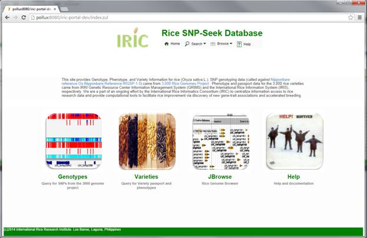
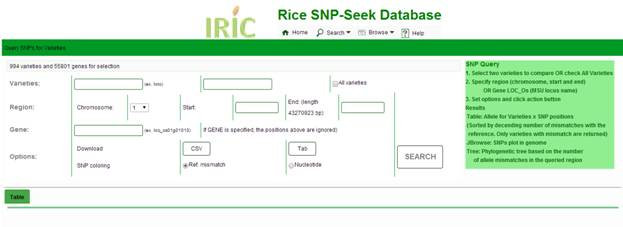
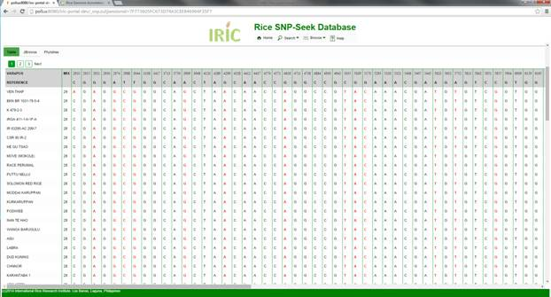
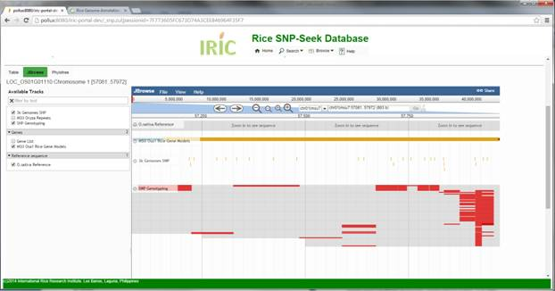
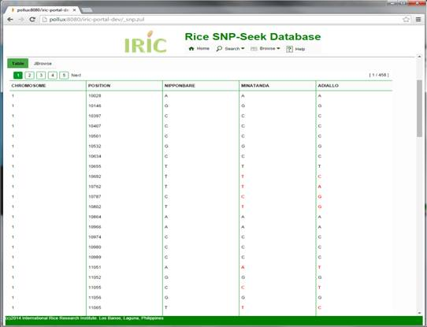
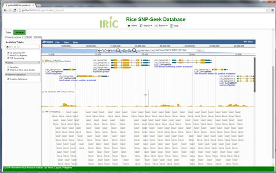
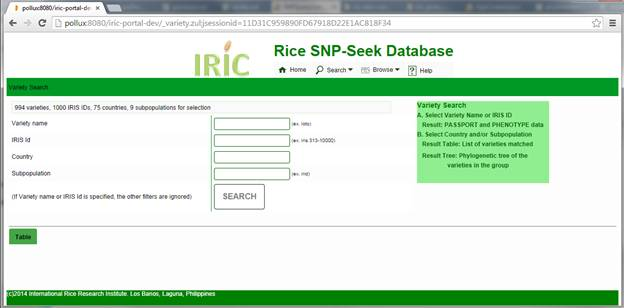
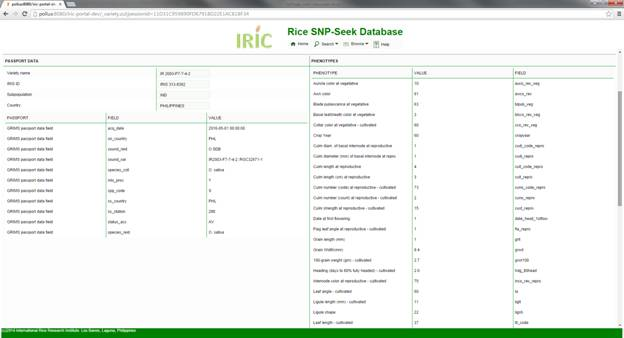
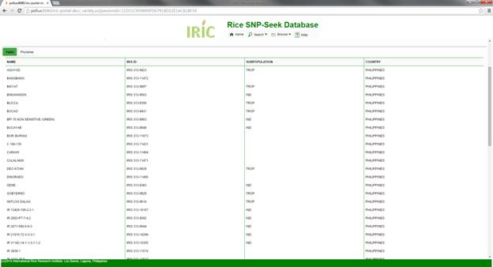
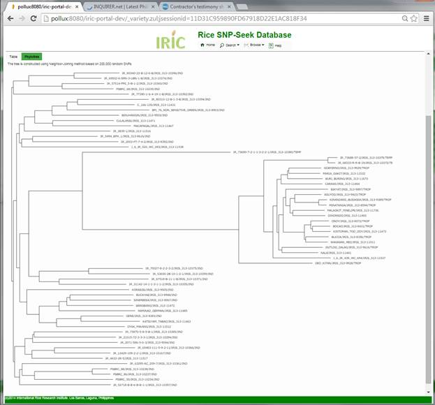

SNP-Seek Database
The home page displays the main
entry points to search or browse the database. The main functionalities can be
accessed by clicking the images, or items from the menu.

SNP Query - search for SNP within a chromosomal region or gene
Variety Query - search for varieties from a country or subpopulation, or passport and phenotypic data
JBrowse Genome Browser - view SNPs along with the genes, sequence and other genome features
Tree Browser - view phylogenetic tree of all the varieties available. The static tree displays a pre-rendered image, the dynamic tree calculates the tree on demand.
Help - display this page

This interface has two
functionalities, to compare alleles between two specified varieties, or to
compare all varieties with the reference genome. In both cases the query region
can be specified either by chromosomal position, or a gene locus.
Compare two varieties:
1.A
Type the variety names in the two text boxes which have auto-completion
features, so you only need to type the
first few characters then select from the drop-down list.
Compare All Varieties
with the reference:
1.B Check the All
varieties checkbox. Varieties selected in the two text boxes are ignored if
this is checked.
Specify chromosome region
or Gene Locus
2. If the Gene locus is specified, the
entries in the Chromosome and Position boxes are ignored. We are using the MSU
Rice Genome Annotation
Project annotations (http://rice.plantbiology.msu.edu/),
so gene loci names are of the form LOC_OSXXgYYYYY. The gene text box also has auto-completion
feature.
Set options
3. SNP Coloring lets you color the
resulting table and visualization based on:
Reference
mismatch – SNPs which have polymorphism with the reference are colored red,
while the rest is white.
Nucleotide – SNPs
are colored based on the base nucleotide: A green, T red, G orange, C blue.
This follows the JBrowse color code.
Display or Download
4.A To download the result, click the
CSV or Tab button to get the given format.
4.B To Display the result in a Table, or
view in JBrowse or a Tree, click the Search button.
View Result: All variery
Three views are available
for SNP query results
1. Table - this view displays the Alleles for each variety in a row,
for all SNP positions within the
specified region or gene. The color is based on SNP coloring selected. The
table is displayed in several pages, depending on the number of returned
varieties. Note that only varieties having at least one reference mismatch are
returned, and the varieties are sorted by decreasing number of mismatches.

2. JBrowse – the JBrowse
genome browser lays out the SNP genotyping result in the SNP Genotyping track.
Each variety is represented as a thin row in the track, and ordered the same as
the table. This track is dynamically generated from the query result, and
covers only the queried region or locus. Zooming out from the initial gives
empty rows at booth sides. To view a wide region, do
a query again specifying the new region.

3. PhyloTree -- By counting the number of allele
mismatches between varieties within the queried region or gene, the phylogenetic tree is constructed. This operation takes some
time (~3 minutes).
View result: compare two
varieties
When two varieties are compared, the result is a list
of SNP position within the specified region. The alleles of the reference, and the two varieties for each position are
displayed in a row. Polymorphism between the two varieties is highlighted with
color red.

JBrowse – the JBrowse
tab displays the SNPs of the two varieties within the genome, along with the
genes.


The Variety Query
interface returns the list of varieties from specified country of origin and/or
is a member a subpopulation. It can also retrieve passport and phenotypic data
for a given Variety or IRIS ID.
To get Variety
Information:
Type in the Varity
name or IRIS ID at their corresponding auto-complete boxes. Only one of them should be specified
otherwise an error message is displayed.
The results are Passport data listed
at the left panel and Phenotypes with values at the right.

To search varieties from a
country or a subpopulation
Type in the country and/or the subpopulation at their corresponding
auto-complete boxes. If both are specified, the result set of varieties
satisfy both constraints. The examples below query for varieties from the
Philippines.
Table
result. This
lists the varieties satisfying the constraints sorted by name. Selecting a
variety from this list will display its Variety passport and phenotype data.

Phylotree tab -- The phylogenetic
tree of the result is dynamically computed using based on SNP values from
200,000 random positions between the varieties.
